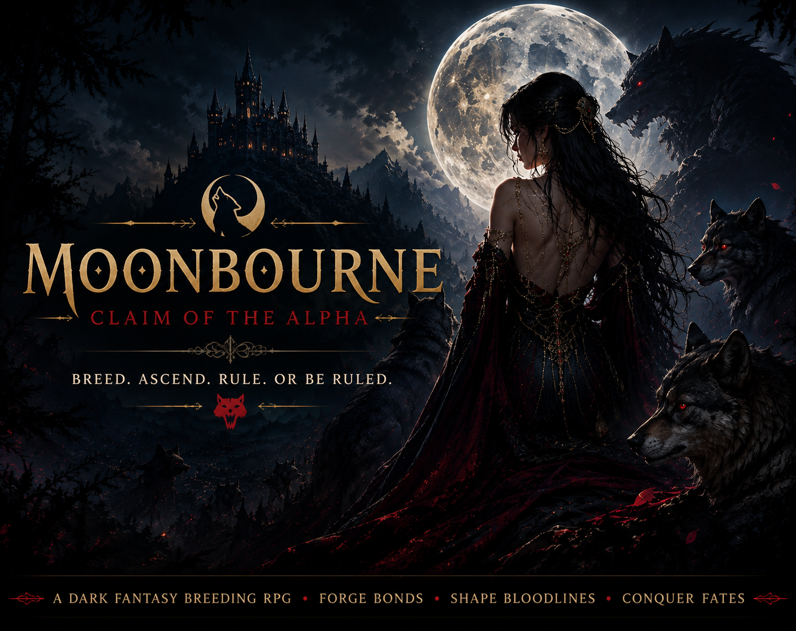

Briar Glen
The beginning. Familiar paths, quiet homes, local relationships, and the last place that still feels completely known.

RHEY'S RELIQUARY
Curated by Rhey

FANTASY ROMANCE RPG
The moon remembers what the heart tries to forget.
A choice-driven fantasy romance RPG where relationships are systems, attraction has consequences, jealousy matters, and every route is built to feel earned.
THE GIRL HOLLOWMERE PROMISED
Moonbourne begins in Briar Glen, where an ordinary departure becomes the first step into a much larger conflict of packs, bloodlines, old promises, dangerous loyalties, and men whose lives begin changing the moment yours crosses theirs.
Romance is not separate from the story. Who you trust, challenge, protect, disappoint, or choose affects how the world responds to you.
THE WORLD
A world of isolated settlements, ancient territories, contested borders, old magic, and places that remember more than their people do.
The beginning. Familiar paths, quiet homes, local relationships, and the last place that still feels completely known.
Deep forests, hidden roads, shifting loyalties, and settlements shaped by those who learned to survive beneath the trees.
A severe northern territory of mountain passes, fortified settlements, and the imposing Frostwall Citadel.
A harsher frontier watched over by Ashenwatch, where distance from safety becomes part of the danger.
THE ROMANCE
Each route is built around a different relationship dynamic, emotional pressure point, and progression toward trust, attachment, intimacy, and commitment.
THE ALPHA
Leadership, responsibility, restraint, and the pressure of wanting someone he cannot simply command into safety.
BLOODFIRE SECOND
Heat, challenge, rivalry, instinct, and a man far less interested in pretending that wanting you changes nothing.
THE HEALER
Care, observation, quiet intimacy, emotional awareness, and the dangerous closeness created by being truly seen.
THE WILDCARD
A relationship shaped through discovery rather than assumption, with choices determining how much of him you are ever allowed to know.
Moonbourne is built around a female protagonist and multiple male romance routes, including individual endings and a potential harem route.
RELATIONSHIPS AS GAMEPLAY
Choices can increase, decrease, or leave affection unchanged depending on the character and situation.
Relationships exist beside one another. Attention, favoritism, intimacy, and competing attachments can matter.
Important scenes and outcomes can depend on previous choices, relationship values, quests, and story decisions.
Exploration and quest progression connect the world, character relationships, and the larger narrative.
The goal is not to hide every decision behind an obvious “correct” answer. Characters respond according to who they are.
Relationship and narrative choices are designed to support different outcomes rather than one predetermined romance.
IN DEVELOPMENT
Moonbourne is being developed as a character-driven fantasy romance RPG with custom relationship systems, quest tracking, dialogue presentation, maps, character busts, affection logic, and interface elements built around the story.
Development currently includes world maps, town exploration, relationship tracking, quests, romance logic, dialogue UI, minimap systems, character art, and branching narrative design.
Character & Relationship Systems
Quest & Exploration Systems
Custom Dialogue Presentation
World & Map Development
Branching Romance Progression
CHAPTER I
Every journey begins somewhere familiar. Moonbourne begins just before familiar stops being safe.